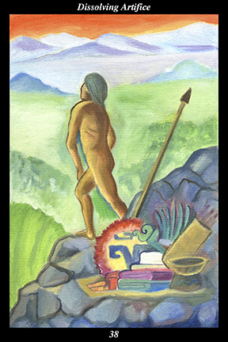

 | IMAGE A male warrior sets down all his belongings and clothes and weapons and ritual objects and walks away into the wilderness, naked. |
INTERPRETATION
The male warrior symbolizes the masculine creative force, who tests and trains human nature in order to increase its versatility and fortitude. That he sets aside all his belongings, clothes, weapons, and ritual objects means that you shed all you have relied upon, both in your relationship with other people and the divine, in order to arrive at your true sense of purpose. Walking away into the wilderness means that you return to that part of the world of experience that is still unknown and from which you received your original inspiration. That the warrior is naked means that nothing stands between you and the world of experience. Taken together, these symbols mean that you leave behind that with which you have been identified.
ACTION
The masculine half of the spirit warrior leaves behind goals and roles in search of the other half. It is easy to lose ourselves in our chosen pursuits, beliefs, and relationships: despite being forewarned about such dangers, we end up trying to rediscover ourselves after a long interruption in our progress because our attention was captured by something that shaped how we felt about ourselves and how others felt about us. Losing ourselves in an activity or relationship is like falling into a trap that everyone talks about—we get used to it, cease to think about it, and then wonder how we could have overlooked such an obvious pitfall. Even those activities and relationships that are meaningful and positive cannot be mistaken for genuine fulfillment, since basing our identity on what we do or have means that our identity can be shattered as soon as what we do or have is taken from us. Though the head knows that seeking the other half of our true self elsewhere is dangerous, it is only when the heart recognizes the inside of the trap that we can escape. To search for the other half is to return to that place where there are no external pursuits, beliefs, or relationships: to walk away from what defines us is to step back to that place where we are quintessentially indefinable. For this reason, it is a time for returning to the quest of experiencing the equally indefinable other half that mirrors the wilderness within you. Because your intent perfectly complements the other half’s own quest, you find wholeness in that inner landscape where dwells the perfect complement to the living attention you have been cultivating all along.
INTENT
It is so easy to lose ourselves in our chosen pursuits, beliefs, and relationships because it seems for a time as if we have found who we truly are: whether we are defined by conflict, pride, or acceptance, the energy moving through us seems an irresistible force sweeping us toward something fulfilling and important. Giving up the influence of that energy is not so easy—often we merely trade it for the energy we get from regret, anger, hurt, and despair. You are able to defeat such self-defeating energies because you train yourself to nurture every moment of creation with the living water of your attention. No longer finding yourself in the eyes of others, you set out to rediscover your unique relationship with all creation.
SUMMARY
Look forward with curiosity and a sense of exploration. Do not look backward with longing and a sense of regret. A wild animal released from captivity stays by its cage until it perceives it has been returned to freedom. No matter how secure the past seemed, it caged you into an artificial sense of who you are. No matter how unfamiliar the future appears, it is the road back to freedom.
THE LINE CHANGES
1° There is something very basic and fundamental deteriorating. Begin by checking your physical health, then that of those closest to you, then the state of things you depend on—foundation, roof, vehicle, appliances, and so forth. Don’t procrastinate—prevent a major crisis by acting now.
2° Your loving-kindness and desire for intimacy are covered over by the memory of an old injury. But you cannot protect your feelings and live life fully both—this habit of armoring yourself was useful once but is now detrimental. You are strong enough now to risk suffering loss again.
3° When conditions around you are worsening, so that even your own position is in doubt, hold fast to the time-proven truths of your spiritual beliefs. Like an anchor securing you in rough seas, this connection sustains you when others would go under. This is the time to let your faith prove itself.
4° When people feel they give constantly but receive nothing in return, they become resentful and bitter, eventually poisoning the very well water they give others to drink. You must avoid this path at all costs. The inner must influence the outer, not the other way around.
5° As difficult as it is sometimes, by not showing favoritism you avoid the resentment and conflict that would tear the situation apart. Show each the same degree of familiarity, keep each at the same distance. You are wringing order out of disorder.
6° Sometimes it is best to have no apparent value. Imago cells serve no purpose in the caterpillar’s life until they trigger the butterfly’s metamorphosis. By holding fast to what others do not care about, you become the center around which the new is organized.